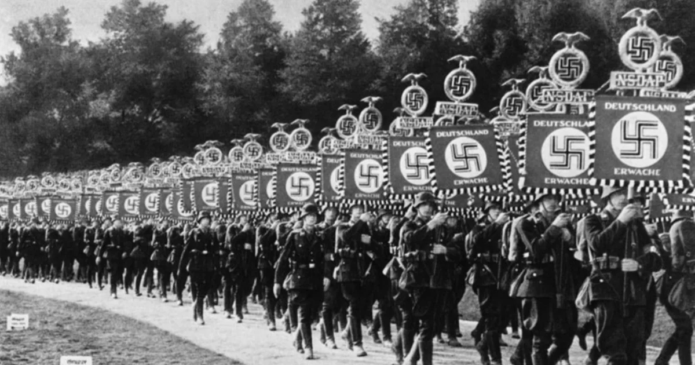
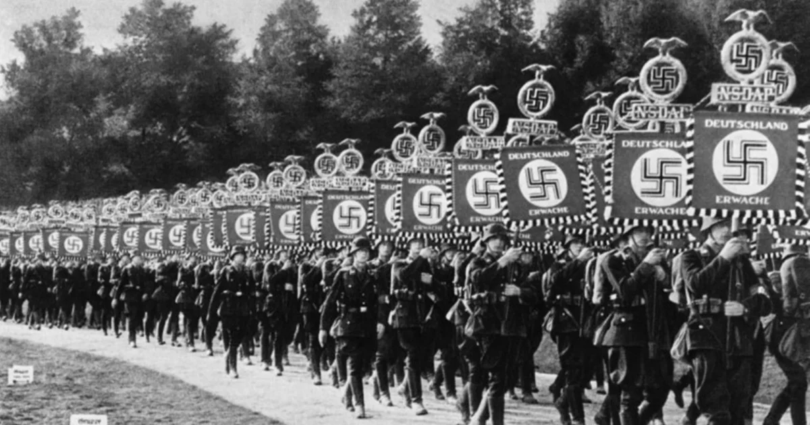

A Segunda Guerra Mundial foi um conflito de proporções globais que aconteceu entre 1939 e 1945. Caracterizada como um conflito em estado de guerra total (no qual há mobilização de todos os recursos para a guerra), a Segunda Guerra Mundial fez Aliados e Eixo enfrentarem-se na Europa, África, Ásia e Oceania. Após seis anos de conflito, mais de 60 milhões de pessoas morreram.
 

A Segunda Guerra Mundial teve como causa direta o expansionismo da Alemanha Nazista ao longo da década de 1930. O estopim para o conflito deu-se com a invasão da Polônia realizada pelos alemães, em setembro de 1939. A Segunda Guerra Mundial ficou marcada pelos horrores do Holocausto e do lançamento das bombas atômicas.
A Segunda Guerra Mundial contou com o envolvimento de dezenas de países. Os participantes da Segunda Guerra Mundial podem ser agrupados em dois grupos.